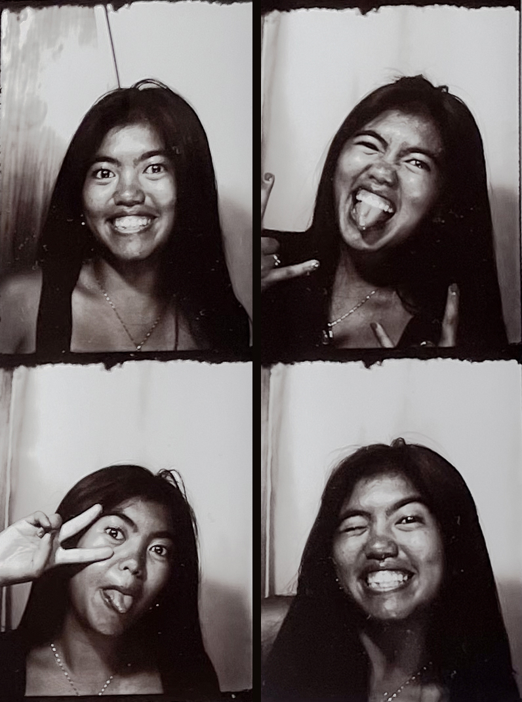

Sabrina Ortiz is a dancer, photographer, and writer from Manila, Philippines. She is currently pursuing a
double degree in Rehabilitation Psychology and Information Science at the University of
Wisconsin-Madison as a member of the 17th cohort of the First Wave Urban Arts and Hip-Hop Scholarship.
Trained under Toni Lopez-Gonzales Ballet School, Elan Ballet and Pilates Studio (Australian Ballet Conservatoire syllabus), and the Philippine Ballet Theatre national company, she has been dancing ballet and other forms of contemporary dance before transitioning into teaching younger ballet levels. Her passion for both digital and analog photography is heavily inspired by her father. Through her lens, she tells compelling stories of family, isolation, reclaiming identity, and love. Her work in writing, photography, and videography has been her main source of memory-making and connecting.
Professional CVMULTI-DISCIPLINARY ARTIST
